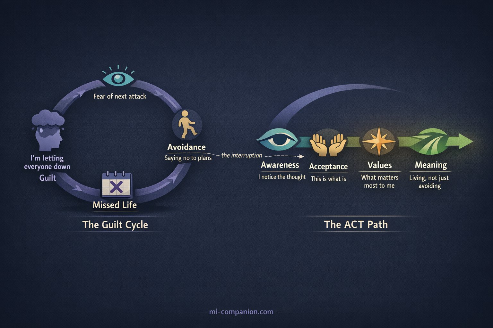
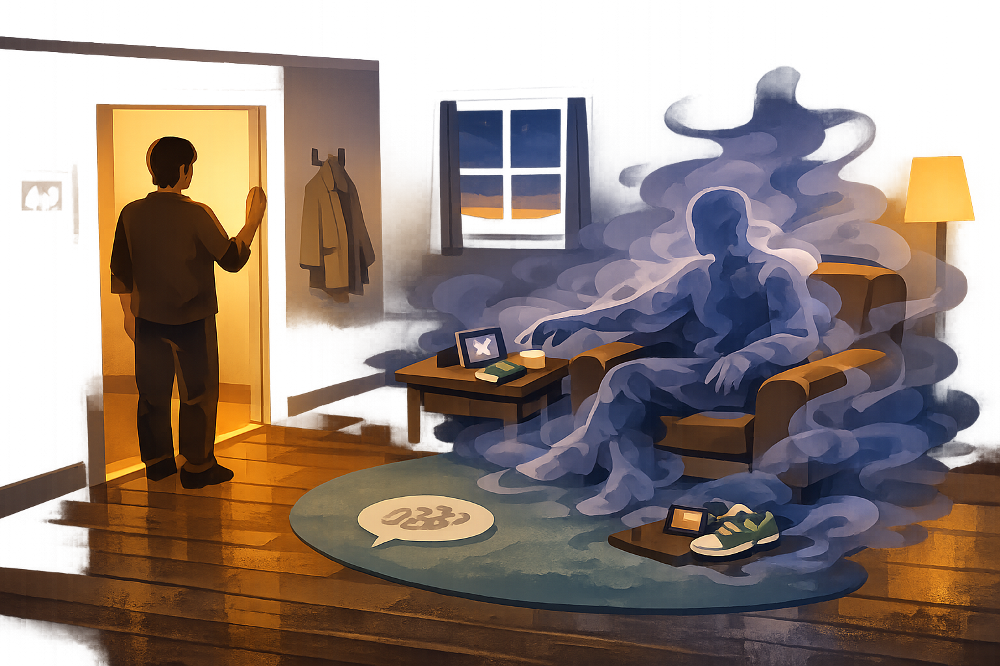

By Rustam Iuldashov
30 years lived experience with chronic migraine | Sources: 25 peer-reviewed references including Neurology (n=59,001), Headache (n=19,891), British Journal of Health Psychology, Annual Review of Psychology | Last updated: March 22, 2026
Medical Review: This content is based on peer-reviewed research from Neurology, Headache, British Journal of Health Psychology, Annual Review of Psychology, British Journal of Clinical Psychology, Behaviour Research and Therapy, and Frontiers in Psychology. Rustam Iuldashov is not a medical professional. Always consult a qualified healthcare provider for health-related decisions.
📋 Key Takeaways
- Health-related guilt in chronic pain is consistently linked to more pain, greater disability, and poorer psychological outcomes — it amplifies the disease.
- Nearly one-third of people with migraine experience stigma from others minimizing their condition, which feeds internalized guilt.
- Migraine guilt persists between attacks as part of interictal burden — self-blame and avoidance active even on headache-free days.
- The guilt cycle (fear → avoidance → missed life → guilt → more fear) becomes self-reinforcing. ACT and narrative therapy both offer tools to interrupt it.
- The “best friend test” reveals the double standard: you offer others compassion and reserve punishment for yourself.
- Externalization — treating migraine as an uninvited guest rather than a personal failing — reshapes identity away from illness.
“Sorry I can’t come tonight.” “Sorry I’m cancelling again.” “Sorry I’m like this.”
If you live with migraine, your phone’s autocomplete has probably learned to apologize for you. The cancelled dinners. The abandoned plans. The birthday party you watched from bed through your child’s photos. Each one leaves a deposit in the guilt account — and the interest compounds.
But here’s the question nobody asks: Why are you apologizing for a neurological disease?
Nobody expects a person with epilepsy to say “sorry” after a seizure interrupts dinner. Nobody tells someone with diabetes that their blood sugar crisis was “inconsiderate.” Yet migraine — the second leading cause of disability worldwide — somehow transforms the person who has it into a person who apologizes for having it.[1]
This isn’t a character flaw. It’s a psychological pattern with deep roots, specific mechanisms, and well-studied exits.
The Anatomy of Chronic Illness Guilt
June Price Tangney, one of the world’s foremost researchers on moral emotions, draws a critical distinction: guilt targets a specific behavior (“I did a bad thing”), while shame targets the self (“I am bad”).[2] Healthy guilt is useful. You snapped at a colleague, you feel remorse, you apologize. System works.
Chronic illness corrupts this system. When you cancel plans for the seventh time, the guilt isn’t about a choice you made. You didn’t choose migraine. Yet your brain processes the outcome — letting someone down — through the same emotional machinery. Over time, situation-specific guilt quietly transforms into something more corrosive: a chronic sense that you are the problem.[3]
The first systematic review of health-related guilt in chronic pain confirmed this trajectory across 18 studies. The pattern was consistent: higher guilt correlated with more pain, greater functional impairment, and poorer psychological adjustment.[4] Guilt didn’t just ride alongside the disease. It amplified it.
The Migraine Guilt Machine
Migraine is uniquely engineered to produce guilt, for reasons that go beyond pain.
The invisibility problem. Unlike a cast or a wheelchair, migraine leaves no visible evidence. A 2024 study of 59,001 people with migraine found that nearly one-third experienced stigma — others viewing their condition as exaggerated or used for personal gain.[5] When no one can see your disease, your brain fills the silence with self-doubt.
The unpredictability problem. A 2023 meta-synthesis of qualitative migraine research found guilt as a dominant theme — not because people missed events, but because they could never guarantee they wouldn’t.[6] The inability to make reliable commitments becomes, in the guilty mind, evidence of personal failure. One participant captured it in five words: “It’s my brain. It’s my fault.”[6]
The ripple problem. The CaMEO Study (n=19,891) — one of the largest migraine investigations ever conducted — found that the disease negatively affected parenting, romantic relationships, career achievement, and finances.[7] Among people with chronic migraine, nearly 10% chose not to have children or delayed having them because of the disease.[7] As researcher Richard Lipton observed, the data reflected “both the burden of illness and the guilt that people with migraine feel.”[8]
The Interictal Trap: Guilt Without a Headache
Here is what makes migraine guilt particularly insidious: it doesn’t require pain to operate.
The emerging concept of “interictal burden” describes cognitive, emotional, and functional impairments that persist between attacks — anticipatory anxiety, fear of the next episode, and the constant mental arithmetic of whether to commit to plans.[9] A 2023 study identified self-blame, guilt, and stigma as key interictal factors even when patients weren’t in pain.[10] You’re lying on the couch on a headache-free Tuesday, and the guilt whispers: you should be making up for lost time.
What makes this especially damaging is the cycle it creates. Fear of the next attack leads to avoidance. Avoidance leads to missed activities. Missed activities produce guilt. Guilt increases anxiety about the next potential disruption — which makes the next attack feel even more threatening.[11] Round and round it goes: fear → avoidance → missed life → guilt → more fear. The migraine itself becomes almost secondary to the emotional loop built around it.

Five Evidence-Based Paths Out
Multiple therapeutic frameworks have been studied for chronic illness guilt — and they converge on a surprisingly consistent set of principles.
1. The Uninvited Guest: Separating You from the Disease
Michael White and David Epston proposed something radical: “The person is not the problem. The problem is the problem.”[12] Their technique — externalization — separates identity from condition.
Think of it this way. Migraine is an uninvited guest who shows up at your house without warning, rearranges your furniture, cancels your evening plans on your behalf, and then leaves you to explain the mess. You didn’t invite this guest. You didn’t open the door. But somehow, you’re the one apologizing to everyone for the disruption.
Externalization gives you language for this distinction. “I’m unreliable” becomes “Migraine disrupted my plans.” “I ruined the evening” becomes “The uninvited guest showed up again.” The grammatical shift is small. The psychological shift is enormous. When the disease is external, you can examine its influence, challenge its narrative, and — crucially — notice the times when it didn’t win.[13]

This isn’t positive thinking or denial. It’s a deliberate re-authoring of the story you tell about yourself — from someone defined by their disease to someone who lives alongside an uninvited companion.[14]
2. The Best Friend Test
Kristin Neff’s research identifies three components of self-compassion: self-kindness rather than self-judgment, common humanity rather than isolation, and mindfulness rather than over-identification with painful thoughts.[15] People with chronic illness who practiced self-compassion adopted more adaptive coping — reframing their situation, accepting what couldn’t be changed — and less self-blame.[16]
But the most powerful application may be the simplest.
The Best Friend Test
Imagine your best friend calls you in tears. She has a migraine attack. She’s missing your birthday dinner. What do you say to her? “You’ve let me down. You’re a terrible friend”? Or: “Turn off the lights and rest. I’ll bring you soup tomorrow”?
Now ask yourself: why do you speak to her with warmth — and to yourself with prosecution? Why is she a person who is suffering, but you are a person who is failing?
That gap — between the compassion you offer others and the punishment you reserve for yourself — is exactly what self-compassion research targets. Closing it doesn’t mean lowering your standards. It means applying the same human standard in both directions.[15]
3. Cooling the Alarm System
Paul Gilbert identifies three emotion regulation systems in the brain: threat detection, drive/achievement, and soothing/safeness.[17] In chronic guilt, the threat system runs hot — interpreting every cancelled plan as social danger. The soothing system, which should counterbalance it, stays suppressed.
CFT trains people to deliberately activate the soothing system through compassionate imagery, self-talk, and breathing — not to eliminate guilt, but to prevent it from hijacking the brain’s alarm architecture.[17] Gilbert draws a distinction that matters here: guilt as remorse is healthy and reparable. Shame as self-attack is destructive.[18] The goal isn’t to feel nothing. It’s to process difficult emotions through compassion instead of punishment.
4. Unhooking from Guilt Thoughts
Acceptance and Commitment Therapy doesn’t argue with guilty thoughts. It teaches you to notice them. When “I’m a burden” appears, ACT reframes the observation: “I’m having the thought that I’m a burden.” The thought is still there. But you are no longer inside it.
A meta-analysis of 33 RCTs (n=2,293) found that ACT produced meaningful improvements in pain acceptance, psychological flexibility, and depression in chronic pain patients.[19] ACT also redirects attention from avoidance to values: rather than organizing life around what migraine prevents, it asks what matters most to you — and how to move toward it within the reality of your condition.[20]
This directly interrupts the guilt cycle. Instead of: fear → avoidance → guilt → more fear, ACT introduces a different sequence: awareness → acceptance → values-based action → meaning. You still cancel plans sometimes. But the cancellation no longer defines you.
5. Rewriting the Social Contract
The most practical intervention may be the simplest: change how you communicate. Research consistently shows that migraine stigma decreases when others understand the disease.[5][21]
Replace Apology with Explanation
“I need to cancel tonight — migraine has shown up” carries fundamentally different emotional weight than “Sorry, I can’t come.”
It names the condition as the agent. It removes the apology. It opens space for understanding rather than forgiveness — because there’s nothing to forgive.
⚠️ When Guilt Becomes Overwhelming
If chronic illness guilt leads to persistent feelings of worthlessness, withdrawal from relationships, or hopelessness, these may be signs of clinical depression — which is 2-3 times more prevalent in people with migraine than in the general population.[11] Guilt that stops you from seeking help is guilt doing its most dangerous work.
Please talk to your healthcare provider. If you are in crisis, contact your local emergency services or a crisis helpline. You deserve professional support, not just coping strategies.
The Permission You Don’t Need
Thirty years of living with migraine has taught me something no study can fully capture: the guilt is often louder than the pain. The headache passes. The guilt about what it cost — the dinner, the school play, the promise — lingers longer.
But the evidence is clear: guilt in chronic illness is not a moral signal. It’s a psychological response to an impossible situation — the collision between the life you want and the neurological reality you didn’t choose. Researchers say it explicitly: health-related guilt should be targeted as an intervention, not accepted as an inevitable cost of living with pain.[4]
You do not owe the world an apology for a disease that lives in your brain. And the first step toward freedom is the simplest and hardest thing: letting the sentence end before the word “sorry” arrives.
⚕️ Important Medical Disclaimer
This article is for informational and educational purposes only and does not constitute medical advice, diagnosis, or treatment. The author, Rustam Iuldashov, is not a licensed physician, neurologist, psychologist, or healthcare professional. He is a patient advocate with 30 years of personal experience living with chronic migraine.
All clinical claims in this article are sourced from peer-reviewed research published in indexed medical journals. Study designs and sample sizes are noted where applicable.
Always consult a qualified healthcare provider for questions about your individual health, migraine treatment, or mental health decisions. The psychological frameworks discussed — narrative therapy, self-compassion, Compassion-Focused Therapy, and Acceptance and Commitment Therapy — are evidence-based approaches, but they are not substitutes for individualized professional care. If you are experiencing significant guilt, depression, or anxiety related to chronic illness, please seek evaluation from a qualified mental health professional.
Narrative therapy concepts discussed in this article are presented for educational purposes; the author does not provide therapeutic services. This content was last reviewed for accuracy on March 22, 2026.
References
- GBD 2019 Diseases and Injuries Collaborators. “Global burden of 369 diseases and injuries in 204 countries and territories, 1990–2019.” The Lancet, 396:1204-1222 (2020). doi:10.1016/S0140-6736(20)30925-9. Systematic analysis. n=global.
- Tangney JP, Dearing RL. Shame and Guilt. New York: Guilford Press (2002). Integrative review of empirical research.
- Miceli M, Castelfranchi C. “Reconsidering the Differences Between Shame and Guilt.” Europe’s Journal of Psychology, 14(3):710-733 (2018). doi:10.5964/ejop.v14i3.1564. Theoretical review.
- Serbic D, Pincus T. “Health-related guilt in chronic primary pain: A systematic review of evidence.” British Journal of Health Psychology, 27(1):289-319 (2022). doi:10.1111/bjhp.12529. Systematic review. n=18 studies (12 qualitative, 6 quantitative).
- Shapiro RE, Nicholson RA, Seng EK, et al. “Migraine-Related Stigma and Its Relationship to Disability, Interictal Burden, and Quality of Life: Results of the OVERCOME (US) Study.” Neurology, 102(3):e208074 (2024). doi:10.1212/WNL.0000000000208074. Cross-sectional population-based survey. n=59,001.
- Leonardi M, Raggi A. “Living with migraine: A meta-synthesis of qualitative studies.” Frontiers in Psychology, 14:1129926 (2023). doi:10.3389/fpsyg.2023.1129926. Qualitative meta-synthesis. n=262 (10 studies).
- Buse DC, Fanning KM, Reed ML, et al. “Life With Migraine: Effects on Relationships, Career, and Finances From the CaMEO Study.” Headache, 59:1286-1299 (2019). doi:10.1111/head.13613. Prospective longitudinal web-based survey. n=19,891.
- American Headache Society. “Burden of Migraine Affects Family, Career.” AHS Research Library (2024). Expert commentary on CaMEO data.
- Interictal Burden of Migraine: A Narrative Review. Headache and Pain Research (2025). Narrative review.
- Estave PM, Margol C, Beeghly S, et al. “Mechanisms of mindfulness in patients with migraine: Results of a qualitative study.” Headache, 63(3):390-409 (2023). doi:10.1111/head.14481. Qualitative (constructivist grounded theory). n=81.
- Buse DC, Seng EK, Engstrom E, et al. “Anxiety Disorders, Anxious Symptomology and Related Behaviors Associated With Migraine: A Narrative Review.” Current Pain and Headache Reports (2025). doi:10.1007/s11916-024-01312-9. Narrative review.
- White M, Epston D. Narrative Means to Therapeutic Ends. New York: W.W. Norton (1990). Clinical framework / case studies.
- White M. Maps of Narrative Practice. New York: W.W. Norton (2007). Clinical framework.
- Johnson L. “Using Social Media to Change the Narrative Around Chronic Illness.” Australian and New Zealand Journal of Family Therapy, 41(1):74-86 (2020). doi:10.1002/anzf.1400. Clinical vignette / conceptual paper.
- Neff KD. “Self-Compassion: Theory, Method, Research, and Intervention.” Annual Review of Psychology, 74:193-218 (2023). doi:10.1146/annurev-psych-032420-031047. Comprehensive review. n=4,000+ studies reviewed.
- Sirois FM, Molnar DS, Hirsch JK. “Self-Compassion, Stress, and Coping in the Context of Chronic Illness.” Self and Identity, 14(3):334-347 (2015). doi:10.1080/15298868.2014.996249. Cross-sectional survey.
- Gilbert P. “The origins and nature of compassion focused therapy.” British Journal of Clinical Psychology, 53:6-41 (2014). doi:10.1111/bjc.12043. Theoretical / clinical framework.
- Gilbert P, Procter S. “Compassionate mind training for people with high shame and self-criticism.” Clinical Psychology & Psychotherapy, 13:353-379 (2006). doi:10.1002/cpp.507. Pilot study. n=6.
- Yang Z, et al. “The Efficacy of Acceptance and Commitment Therapy for Chronic Pain: A Three-Level Meta-Analysis and Trial Sequential Analysis.” Behaviour Research and Therapy, 165:104308 (2023). doi:10.1016/j.brat.2023.104308. Meta-analysis of RCTs. n=2,293 (33 RCTs).
- Hayes SC, Strosahl KD, Wilson KG. Acceptance and Commitment Therapy: The Process and Practice of Mindful Change. 2nd ed. New York: Guilford Press (2012). Clinical manual.
- Casas-Limón J, Quintas S, López-Bravo A, et al. “Unravelling Migraine Stigma: A Comprehensive Review.” Brain Sciences, 14(9):881 (2024). doi:10.3390/brainsci14090881. Narrative review.
- Tangney JP, Stuewig J, Mashek DJ. “Moral Emotions and Moral Behavior.” Annual Review of Psychology, 58:345-372 (2007). doi:10.1146/annurev.psych.56.091103.070145. Comprehensive review.
- Estave PM, Wells RE, Buse DC, et al. “Learning the full impact of migraine through patient voices: A qualitative study.” Headache, 61(7):1004-1020 (2021). doi:10.1111/head.14151. Qualitative (semi-structured interviews). n=81.
- Buse DC, Powers SW, Gelfand AA, et al. “Adolescent perspectives on the burden of migraine on family.” Headache, 58(6):843-848 (2018). Cross-sectional (CaMEO ancillary).
- Cerna A, Malinakova K, Van Dijk JP, et al. “Guilt, shame and their associations with chronic diseases in Czech adults.” Psychology, Health & Medicine, 27(2):503-512 (2022). doi:10.1080/13548506.2021.1944649. Cross-sectional survey. n=1,000.

How We Create Content
- Peer-reviewed sources only. This article draws from Neurology, Headache, British Journal of Health Psychology, Annual Review of Psychology, British Journal of Clinical Psychology, Behaviour Research and Therapy, Clinical Psychology & Psychotherapy, Frontiers in Psychology, Brain Sciences, and Psychology, Health & Medicine.
- Study transparency. Study design and sample sizes noted for all clinical references.
- Source verification. All claims backed by numbered references with DOI links.
- Experience + Science. 30 years personal migraine experience combined with peer-reviewed evidence and established therapeutic frameworks (June Price Tangney, Michael White, David Epston, Kristin Neff, Paul Gilbert, Steven Hayes).
- Regular updates. Articles reviewed when significant new research emerges.
- No conflicts of interest. No funding from pharmaceutical companies, therapy practices, or supplement manufacturers.
You Are Not Your Guilt. Mi Understands.
Migraine Companion was built on narrative therapy principles — the idea that you are not your condition. Track your patterns, externalize your migraine, and start re-authoring your story.
Last reviewed: March 2026
Next scheduled review: September 2026